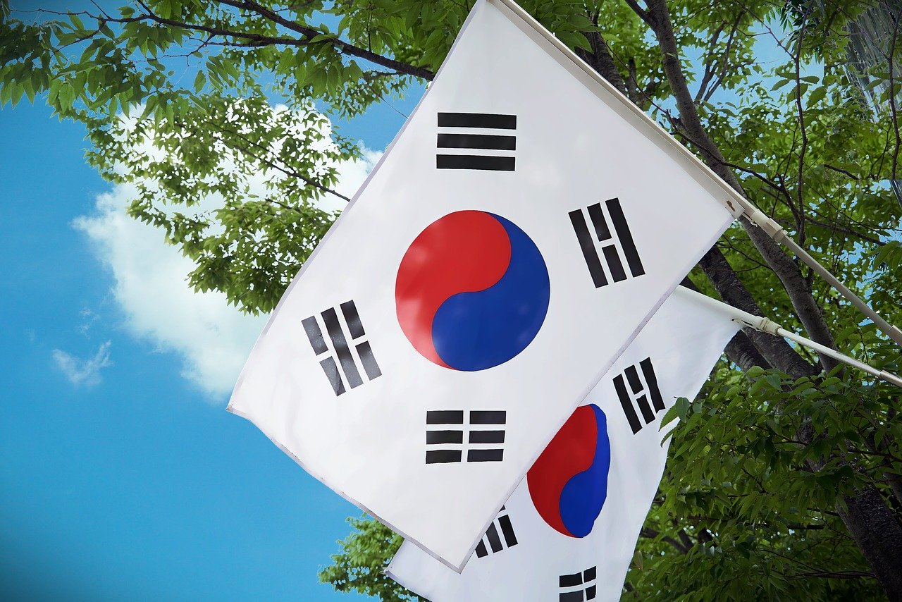
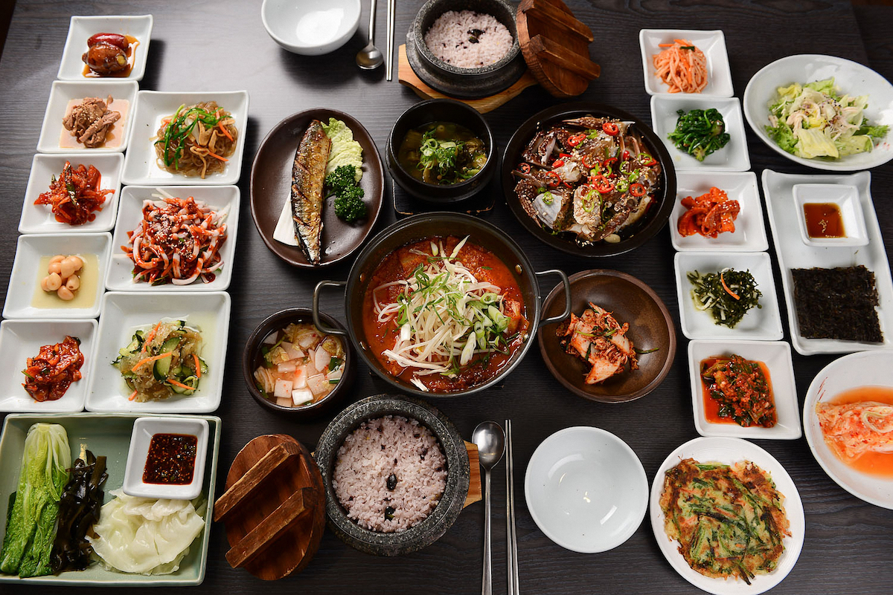
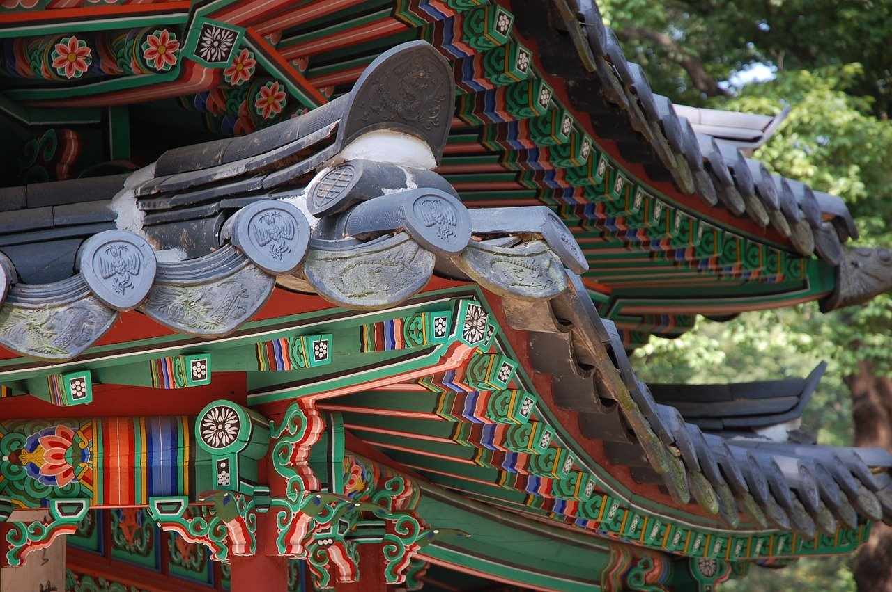
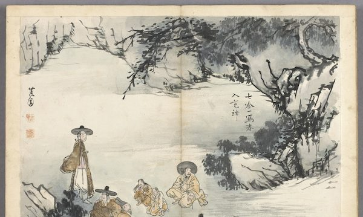

La Corée du Sud
Etymologie
Le nom que les Sud-Coréens donnent à leur pays est Hanguk, qui signifie littéralement "Pays des Han", du nom des populations de la Préhistoire de la Corée qui habitaient le sud de la péninsule (à ne pas confondre avec les Han chinois).


Gastronomie
La Corée est une région reconnue pour la variété et la qualité de sa cuisine. Ses grands classiques ne sauraient éclipser un répertoire unique à la gloire du goût sous toutes ses formes et sous tous les modes de préparation. Cette cuisine se distingue de celles des pays voisins, notamment le Japon et la Chine, cependant on retrouve des parfums assez proches dans la cuisine de la province pourtant relativement éloignée de Hubei, en Chine. La cuisine coréenne utilise beaucoup de piment (notamment dans le kimchi (김치) ou avec le gochujang (고추장)), le sésame, sous forme d'huile et de graines y est une quasi constante, l'ail, ainsi qu'une grande variété de légumes, fruits de mer, légumes sauvages, etc. Il existe des différences selon les régions de la péninsule dans la gastronomie coréenne, mais en général la cuisine des régions situées plus au nord est moins épicée que celle des régions situées au sud, notamment en ce qui concerne le kimchi.
Tous les plats et accompagnements se partagent sur la table, le convive disposant généralement d'un bol de riz et d'un autre de soupe « privatifs » pour pouvoir picorer à loisir. Le plat principal peut être servi de façon individuelle et certains repas peuvent même suivre un enchaînement gastronomique plus classique vu des Occidentaux, mais l'avantage est de pouvoir alterner les goûts de façon libre et souvent créative.
A voir
Changdeokgung, autrement dit le Palais de la Vertu illustre, fait partie des bâtiments victimes des invasions japonaises de 1592. Il était utilisé comme annexe du Palais Royal, et l’empereur Sunjong y résida jusqu’à sa mort en 1926. Sa femme y resta jusqu’en 1966.


Oeuvres
L'art coréen recouvre l'ensemble des arts pratiqués sur le territoire de la Corée depuis la Préhistoire, et à l'époque contemporaine cela concerne aussi l'importante diaspora coréenne, résidant plus ou moins temporairement hors de Corée.
Le concept occidental d'art, (coréen : 미술), misul, n'est introduit qu'en 19112, dans une Corée qui venait d'être annexée (le 22 août 1910). Mais plusieurs traditions, qu'elles aient été populaires, de tout temps, ou savantes, ont valorisé les objets que l'Occident qualifie d'art.